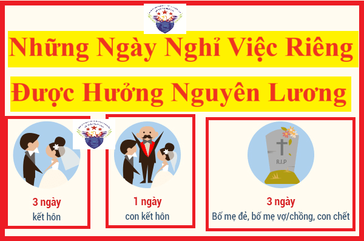

Những ngày nghỉ việc riêng được hưởng nguyên lương hiện nay đang được quy định tại điều 115 của Bộ Luật lao động số 45/2019/QH14
Cụ thể như sau:
1. Người lao động được nghỉ việc riêng mà vẫn hưởng nguyên lương và phải thông báo với người sử dụng lao động trong trường hợp sau đây:

a) Kết hôn: nghỉ 03 ngày;
b) Con đẻ, con nuôi kết hôn: nghỉ 01 ngày;
c) Cha đẻ, mẹ đẻ, cha nuôi, mẹ nuôi; cha đẻ, mẹ đẻ, cha nuôi, mẹ nuôi của vợ hoặc chồng; vợ hoặc chồng; con đẻ, con nuôi chết: nghỉ 03 ngày.
2. Người lao động được nghỉ không hưởng lương 01 ngày và phải thông báo với người sử dụng lao động khi ông nội, bà nội, ông ngoại, bà ngoại, anh, chị, em ruột chết; cha hoặc mẹ kết hôn; anh, chị, em ruột kết hôn.
3. Ngoài quy định tại khoản 1 và khoản 2 Điều này, người lao động có thể thỏa thuận với người sử dụng lao động để nghỉ không hưởng lương.
Các tính tiền lương cho những ngày nghỉ việc riêng được hưởng nguyên lương:
Theo khoản 2, điều 67 Nghị định 145/2020/NĐ-CP thì:
Điều 67. Tiền tàu xe, tiền lương trong thời gian đi đường, tiền lương ngày nghỉ hằng năm và các ngày nghỉ có hưởng lương khác
........
........
2. Tiền lương làm căn cứ trả cho người lao động những ngày nghỉ lễ, tết, nghỉ hằng năm, nghỉ việc riêng có hưởng lương theo Điều 112, khoản 1 và khoản 2 Điều 113, Điều 114, khoản 1 Điều 115 của Bộ luật Lao động là tiền lương theo hợp đồng lao động tại thời điểm người lao động nghỉ lễ, tết, nghỉ hằng năm, nghỉ việc riêng có hưởng lương.
Vậy là: Khi người lao động nghỉ việc riêng vào những được hưởng nguyên lương theo điều 115 của Bộ Luật lao động số 45/2019/QH14 thì Tiền lương làm căn cứ trả cho người lao động vào những ngày nghỉ việc riêng được hưởng nguyên lương này là: tiền lương theo hợp đồng lao động tại thời điểm người lao động nghỉ việc riêng có hưởng lương.
Kế Toán Diệu Tâm mời các bạn tham khảo thêm: